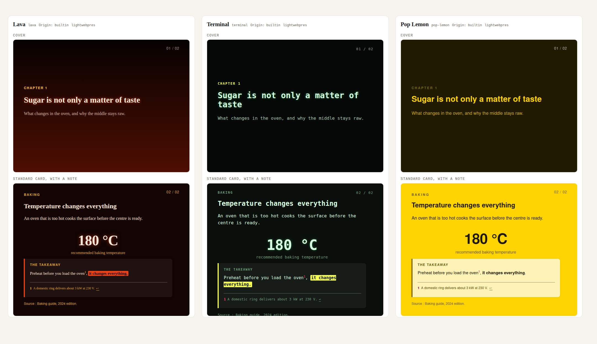

LightWebPres transforme des articles Markdown structurés en présentations HTML navigables et thémables.
Code source et projet : GitHub
LightWebPres est distribué sous la GNU GPL version 3 ou ultérieure, avec la LightWebPres Output Exception, version 1.0. Cette exception permet de publier les présentations générées sous les conditions de votre choix.
Ces boutons règlent la présentation. Le pincement garde le zoom natif du navigateur.
Le thème principal est sélectionné par défaut.
Un thème règle des propriétés visuelles. Un preset choisit une présentation. Un kit porte une identité autonome.
La galerie générée par le moteur montre chaque thème sur plusieurs composants, avec des filtres par famille, polarité et teinte.

Sur cette page, appuyez sur C pour essayer les apparences publiées, dont les thèmes Encre & citron et Papier & olive du site.
Source : README · Choose a look.
Une seule référence de preset est persistée dans series.json. L’identité est déduite de cette référence.
| Notion | Ce qu’elle choisit |
|---|---|
| Identité | Le cadre qui possède les ressources : native, Commons ou kit. |
| Preset | Les dispositions, le chrome et le thème initial pour la série. |
| Thème | Des couleurs, tailles et autres propriétés typées. |
La référence de ce site est lightwebpres-site@1.0.0/web. Son kit est dans website/templates/kits/ ; ce n’est pas un second moteur de rendu.
La commande de thème change la sélection, sans effacer les propriétés que vous avez épinglées.
python3 lightwebpres series theme set ma-serie --theme evergreen
python3 lightwebpres build ma-serie --lang fr
Le sélecteur C permet aussi au lecteur de changer de thème, parmi ceux embarqués, sans reconstruire les pages. Les alternatives essentielles sont incluses par défaut.
Réglez d’abord les propriétés typées. Réservez custom.css aux règles avancées.
templates/settings.conf épingle des valeurs pour toute la série. Les clés style.* du bloc meta agissent sur un article. Le kit peut apporter des dispositions et des assets ; templates/custom.css reste la couche CSS finale.
Un nom de propriété ou une valeur invalide arrête le build. Le rapport de contraste mesure les valeurs typées résolues, pas le CSS avancé, et n’est pas une certification d’accessibilité.
Source : Guide · Change the whole series et Rules rather than values.